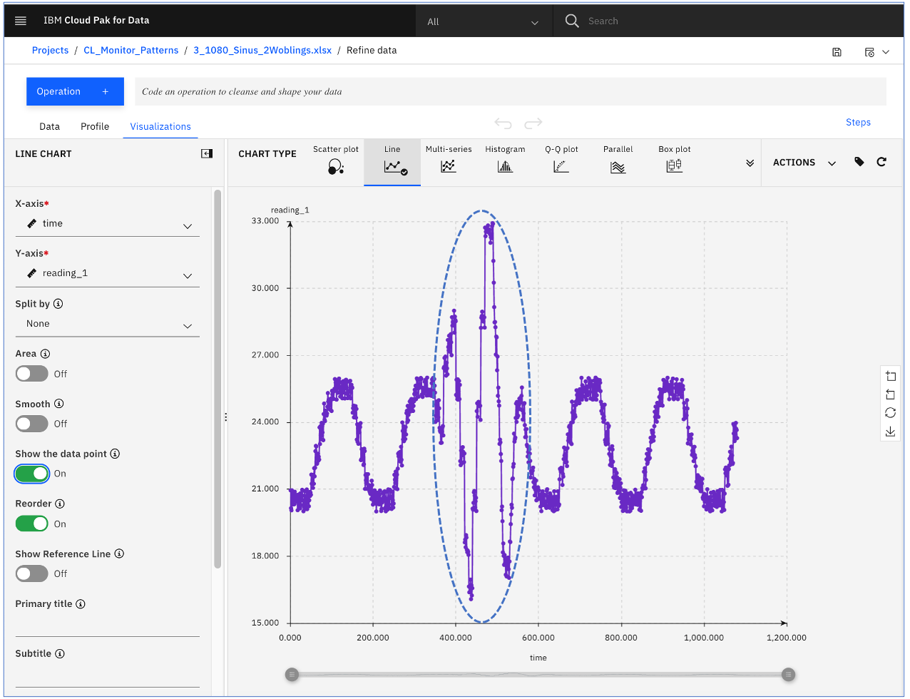
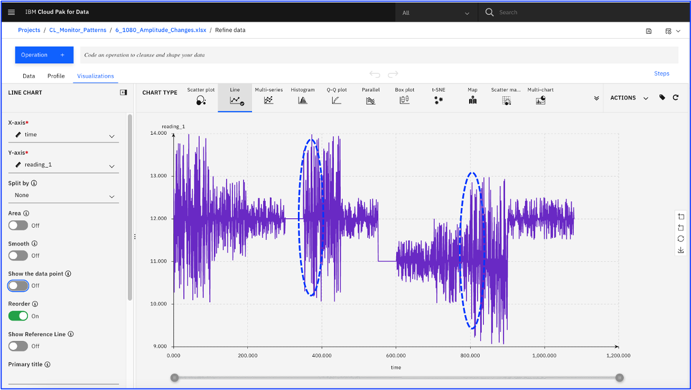
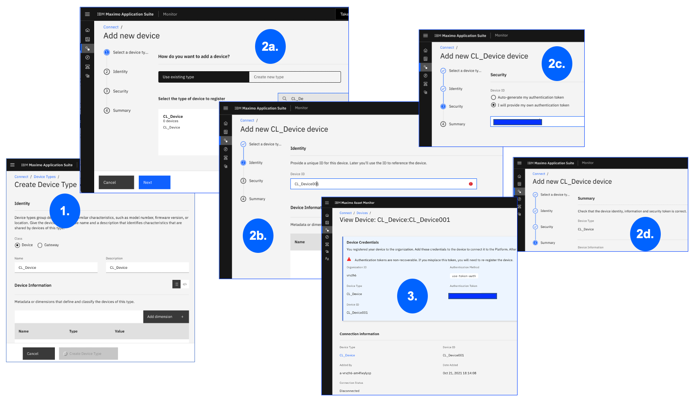
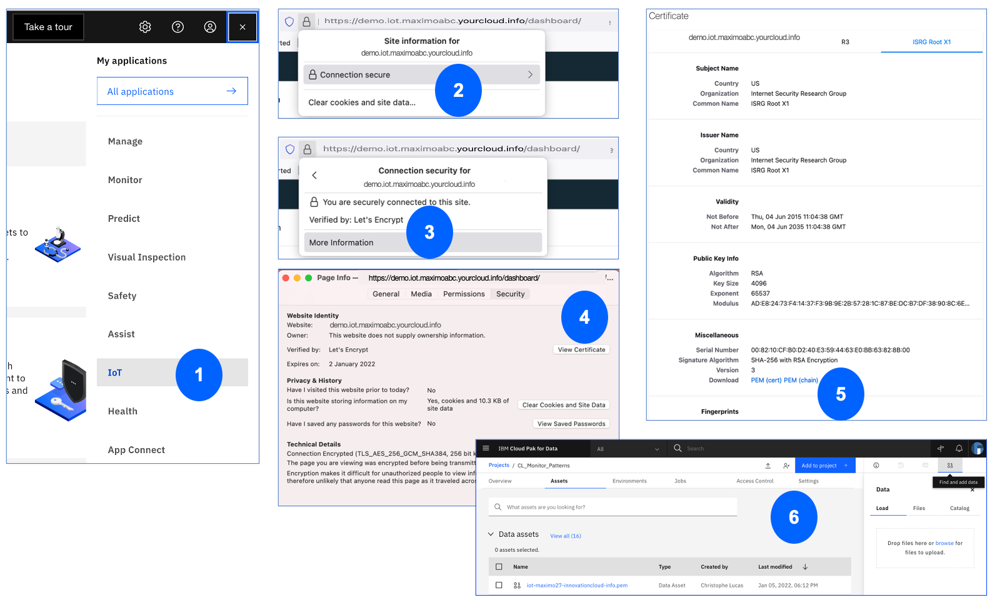
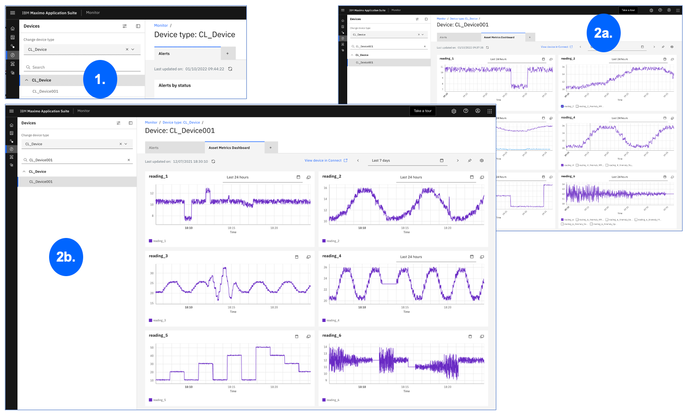

[DRAFT WORK IN PROGRESS - Page last updated on 07 January 2022]
Discover MONITOR with Pattern Files
PREREQUISITES & DISCLAIMER
Disclaimer
This Lab is provided as-is and does NOT represent formal IBM documentation in any way. Please send any feedback directly to Christophe Lucas.
This Lab assumes that you have:
-
an ID to connect to a MONITOR 8.6 instance - either a SaaS instance, or a MONITOR instance part of a Maximo Application Suite (aka MAS) installation.
-
an ID to access a Cloud Pak For Data (aka CP4D) instance. CP4D is typically part of any MAS installation (as it contains e.g. the MONITOR DB2 data lake), and we recommend using your MAS CP4D instance to run this lab - however the instructions should also work with a 'stand-alone' CP4D.
This Lab was built using a Cloud Pak For Data instance and a Monitor 8.6 instance both part of a MAS 8.6 environment running on IBM Cloud.
0. Objectives & Tips
Tip
I tried to make the instructions of this Lab as (visually) clear as possible, i.e. each set of numbered instructions is followed by a picture reflecting those numbers. Do not hesitate to right-click the images and Open Image in New Tab to see all the image details and zoom-in/out.
In this Lab you will:
- Discover and analyse 6 pattern files:
- Understand why and how the 6 data patterns were constructed
- Visualize the data and the anomalies (or 'changes of behaviour') that those 6 files contain using Cloud Pak For Data (aka CP4D) Data Refinery tool
- Learn how to:
- Create the Device in MONITOR that will receive the pattern readings
- Create a Jupyter Notebook on CP4D to send the content of the pattern files to the Device
- Visualise the data on MONITOR's dashboard
- Apply (some of) MONITOR's out-of-the-box Anomaly Detection functions on the pattern data, and create Alerts based on the Anomaly scores.
1. Analyse the pattern files in IBM Cloud Pak for Data (CP4D)
1.1 What are the 6 pattern demo files all about ?
The 6 following files were created to represent just a very few examples of 'typical behaviours and anomalies' that can be observed in industrial machine readings. They were constructed with the following ideas in mind:
- Each file contains 1080 rows of 1 reading type (generically called
reading_1). That means that, depending on the frequency you will use to send the data to MONITOR's Watson IoT Platform (cf. Section 3), you will be able to complete a 'full iteration' of the sample data in 18 minutes, a couple hours, or more - as per table below:
------------------------------------------------------------------
Message Frequency ---> = Messages per Hour ---> = 1080 Demo Time
------------------------------------------------------------------
Every 1 second ---> 3,600 per hour ---> 18 minutes
Every 5 seconds ---> 720 per hour ---> 1 hour 30 minutes
Every 10 seconds ---> 360 per hour ---> 3 hours
Every 30 seconds ---> 120 per hour ---> 9 hours
-
Each file contains some anomalies (or 'changes of behaviour') that are pretty visible to the naked eye. The goal is to see in the last 2 sections of this Lab (Section 5 & Section 6) how (some of) MONITOR's out-of-the-box Anomaly Detection functions pick those anomalies up, and how Alerts can be created using the Anomaly scores of those functions.
-
For each file, I provided .csv and .xlsx versions. The reason I provided the .xlsx format is that you can have a look at how I manually built those files, about 50 rows by 50 rows, using the simplest Excel formula to generate random data between values (for example,
=10.4+1*RAND()meansgenerate a random number between 10.4 and 11.4). With that, you should easily be able to create your own new .xlsx files by changing just some rows in the .xlsx.
The 6 files (cvs and xlsx format), as well as a 0_1080_All file which concatenates those
6 files readings into 1 file, have all been zipped into All_Pattern_Files.zip.
The table below summarises the data that each file contains:
| File Name | Data Overview |
|---|---|
| 1_1080_2Peaks_1Drop_1BuildUp (.csv, .xlsx) Continuous readings of random values between 10 & 11 (i.e. =10+1*RAND() ), with 4 noticeable events: (1) a drop to values between 7 & 8 (rows 200 to 250). (2) a peak to values between 12 & 13 (rows 350 to 380), (3) a small spike buildup with values up to =10.8+1*RAND() (rows 500 to 515). (4) a small 'buildown' where values progressively drop down to =9.3+1*RAND() (rows 600 to 680). |
|
| 2_1080_Sinus_1Peak_2Drops (.csv, .xlsx) A sinusoidal type of input, with 3 noticeable events: (1) a dropdown (rows around 323). (2) another dropdown (around row 627), (3) a spike (around row 839) |
|
| 3_1080_Sinus_2Woblings (.csv, .xlsx) Some strange things going on here, i.e. amplitude change between rows 400 and 550 (vs. the standard sinusoidal-like background) ... |
 |
| 4_1080_Sinus_SignalLoss (.csv, .xlsx) On this one, notice that between rows 370 and 470, a constant value of 23 is sent, 'breaking the sinus' ... |
|
| 5_1080_Plateaus (.csv, .xlsx) Here, we have several plateaus of values. Let's see later if the Anomaly Detection functions react each time there is a plateau change ... |
|
| 6_1080_Amplitude_Changes (.csv, .xlsx) This shows a varying signal which amplitude regularly changes. |
 |
| 0_1080_All (.csv, .xlsx.) This last graph shows the 'concatenated readings' of all 6 previous files, i.e. reading_1 corresponds to 1_1080_2Peaks_1Drop_1BuildUp.csv readings, reading_2 corresponds to 2_1080_Sinus_1Peak_2Drops.csv readings, reading_3 corresponds to 3_1080_Sinus_2Woblings.csv etc |
1.2 Setup a CP4D Project and load the pattern files
Let's first create the CP4D Project that we will use to load and visualise the data, then to build the Jupyter Notebook that will send the data to MONITOR.
- Login to CP4D and click
New projectin theRecent Projectsbox. SelectCreate an empty project. - Name your Project e.g.
CL_Monitor_Patterns(replaceCL_with your own initials). ClickCreate.
Download the zip file All_Pattern_Files.zip.
Unzip it on your local drive.
In your newly created CL_Monitor_Patterns project:
-
Click on the
Assetstab and on the top-rightDataicon. This will open a right-side window. On theLoadtab, just drag and drop the 2 x 6+1 Pattern Files (.csv and .xlsx formats). -
After a couple of seconds, those 14 files will appear under the
Data Assetssection of theAssetstab.
1.3 Use CP4D Data Refinery to visualise the data
Note
The following instructions can be carried using either the .csv or the .xlsx files. We will refer to the .csv versions here, as ultimately it will be the .csv version we will use to send the data to MONITOR's Watson IoT Platform.
Let's first look at the 1_1080_2Peaks_1Drop_1BuildUp.csv file.
- In the
Data assetsbox, on the1_1080_2Peaks_1Drop_1BuildUp.csvrow, clickRefinein the right menu. - On the opened window, click the
Profiletab and see how the system provides you with basic info on the data (e.g. minimum, maximum or standard deviation values). - Click on the
Visualizationstab and observe the vast array of charts that we can create in a couple of clicks. - Click on the
Linechart type. On the left panel, entertimein theX-axisandreading_1in theY-axis. Expand and visualise the file readings, including the 2 peaks, 1 drop and 1 buildup ofreading_1.
Repeat steps 1. to 4. with the 5 other .csv files we saw in Section 1.1.
Now, let's look at some of the other chart types that can be quickly created in CP4D. The following image illustrates just some examples:
- A
3Dchart where we selectedtimeas theX-axis,reading_1(corresponding to the1_1080_2Peaks_1Drop_1BuildUp.csvfile readings) as both theY-axisandZ-axis. See how we clearly see the peaks, drops and buildups there. - A
Box Plotchart where we selectedreading_3(corresponding to the3_1080_Sinus_2Woblings.csvfile readings) as theColumn. Notice how we clearly see the outliers here, corresponding to the 'Woblings' readings. - A
Histogramchart, where we selectedreading_4(corresponding to the4_1080_Sinus_SignalLoss.csvfile readings) as theX-axis. Notice the main central bar corresponding to those 'flat readings' of value 23. - Here, we can clearly see on a
Scatter Plotthe 3 main 'groups of amplitude' that can be seen onreading_6(corresponding to the6_1080_Amplitude_Changes.csvfile readings)
2. Create the Device in Monitor & get the credentials
Attention
Make sure that in this section' exercises, you take note of the following values which
we will later need in the Section 3.2.3:
orgId, typeId,deviceId, YOUR_AUTHENTICATION_TOKEN, and,
additionally for a MONITOR-on-MAS instance: domain and caFile.
2.1 Create Device Type & Device
In this step, take note of orgId, typeId, deviceId, YOUR_AUTHENTICATION_TOKEN.
From your MONITOR home page, click the Connect menu in the left bar, and go to the Device types tab.
- Click the blue
Add new device typebutton (top-right). Name it e.g.CL_Device(replace theCL_with your initials). Click theCreate Device typebutton. - Go to the
Devicestab, clickAdd a device, clickUse existing typeand select theCL_Devicedevice type you just created. ClickNext. On theIdentitystep, Name the device e.g.CL_Device001. ClickNext. On theSecuritystep, enter anAuthentication Tokenof your own. - The
Summaryscreen summarizes the info you just entered. IMPORTANT Make sure that on this screen, you take note ofOrganization ID(=orgid),Device Type(=typeId),Device ID(=deviceId),Authentication Token(=YOUR_AUTHENTICATION_TOKEN). ClickFinish.
NOTE: The orgID we just took note of is the Organization ID of the Watson IoT Platform associated to your MONITOR instance.
Refer to next section to confirm the value of that orgID.

2.2 Get Monitor (SaaS or MAS) Instance details
In this step, confirm the orgID of the Watson IoT Platform associated to your MONITOR instance (SaaS or MAS),
and, for MONITOR-on-MAS only, find and take note of domain and caFile.
Follow either Option A or Option B below (not both), depending on your MONITOR instance.
2.2.1 Option A - Monitor SaaS
For a MONITOR SaaS instance, the only instance info that we will need for Section 3.2
is the orgID that we just took note of in Section 2.1.
Confirm the value of that orgID by doing this:
From your MONITOR Connect menu, click Open Platform Service application button (top-right).
That will open the Watson IoT Platform in a separate tab - observe its URL.
Below is an example of how to confirm your orgID based on your MONITOR's Watson IoT Platform URL:
------------------------------------------------------------------
OPTION A - MONITOR SaaS Example
------------------------------------------------------------------
IF your MONITOR Watson IoT Platform address is:
https://abc123.internetofthings.ibmcloud.com/dashboard/
THEN orgID = abc123
2.2.2 Option B - Monitor on MAS (Maximo Application Suite)
For a MONITOR instance on MAS, we need 2 extra pieces of info: domain and caFile.
Let's first get the required certificate, i.e. the caFile file.
Using a Firefox browser:
- From your MAS or MONITOR Homepage, click the waffle menu (top-right), select
IoTin theMy applicationslist. That will open the Watson IoT Platform in a separate tab. - In the Watson IoT Platform browser bar, click the Security icon just next to the URL. Click the
Connection Secureline. - Then click the
More informationline. That will open a pop-up window. - On the popped-up window, click
View Certificate. That will open a new tab on your browser. - On the opened
Certificatebrowser tab, click theISRG Root X1tab. In theMiscellaneoussection, click thePEM (chain)link. That will download a file which name should look like:iot-maximoabc-yourcloud-info-chain.pem. Save it to your localDownloadsfolder. NOTE: that is the file that we will use as ourcaFilein Section 3.2. - Back to CP4D's
Assetstab, click the little top-rightFind and add datawaffle and drag and drop theiot-maximoabc-yourcloud-info-chain.pemfile you just downloaded. Make sure it then appears on the

To confirm your orgID, and to get the domain value of the Watson IoT Platform associated to your MAS-MONITOR instance,
observe the URLs of your MAS, MAS-MONITOR and MAS-MONITOR-WatsonIoTPlatform Homepages, and follow the example below:
------------------------------------------------------------------
OPTION B - MONITOR on MAS (Maximo Application Suite) Example
------------------------------------------------------------------
IF 'MAS Homepage' URL looks like this:
https://demo.home.maximoabc.yourcloud.info/
THEN 'MAS - MONITOR Homepage' URL should look like this:
https://demo.monitor.maximoabc.yourcloud.info/home
THEN 'MAS - MONITOR - Watson IoT Platform Homepage' should look like this:
https://demo.iot.maximoabc.yourcloud.info/dashboard/
THEN & THEREFORE:
orgID = demo
domain = iot.maximoabc.yourcloud.info
3. Send the Pattern Files Data to Monitor
Great - we now know which data we want to send, and have collected all the information we need to start sending it to MONITOR's Watson IoT Platform. We will now use a Jupyter Notebook to connect to the platform, and send the data to it.
3.1 Overview of the Jupyter Notebook we will build
We will build the Jupyter Notebook from scratch, cell by cell, in the following sections. However, you can already download its final version here Load_Pattern_Files_To_Monitor_FINAL.ipynb. Let's first have a look at it to understand what we are aiming at.
First (0.), in CP4D, click Add to project (top-right button), select Notebook. Click the From File
tab and drag and drop the just-downloaded Load_Pattern_Files_To_Monitor_FINAL.ipynb file
in the Drag and drop files here or upload box.
Select the Default Python 3.7 runtime. Click Create.
Wait a couple of seconds for the runtime to initiate and for the Notebook to open in CP4D.
We can now see the 4 main parts of the Notebook in which we will:
- install the required Watson IoT Platform Python SDK and import a few packages required to run the Notebook successfully.
- provide the
orgId,typeId,deviceId,YOUR_AUTHENTICATION_TOKEN, anddomainandcaFileas we noted them down in Section 2. - connect to MONITOR's Watson IoT Platform and read the 0_1080_All.csv pattern data.
- send the 1080 rows of data to MONITOR's Watson IoT Platform.
3.2 Build the Jupyter Notebook in CP4D
3.2.1 Create the Jupyter Notebook in CP4D
From the Assets tab in CP4D:
- Click
Add to projecttop-right button, selectNotebook. - Give the Notebook a name:
Load_Pattern_Files_to_Monitorand select theDefault Python 3.7runtime. ClickCreate. - Your (blank) Notebook should now open.
3.2.2 Install the Watson IoT Platform Python SDK and required packages
Let's use the Watson IoT Platform Python SDK,
and re-use the simplest possible code snippet (copy-pasted from the SDK's Publishing Device Events topic)
to send data to the CL_Device001 we registered in section Section 2.1 section. In the Notebook we just created:
-
In the first cell of the Notebook, type
# Install the Watson IoT Platform Python SDKand selectMarkdownin theFormattoolbar. ClickRun- this is just a header, not code.Let's now install the Python SDK itself. From the Notebook
Insertmenu, clickInsert Cell below. SelectCodein theFormattoolbar and enter this content in the cell:python pip install wiotp.sdkClick the
Runbutton in the toolbar. This installation will take 5 to 10 seconds. Look for the message at the end of the output console, which should look like this: Successfully installed iso8601-1.0.2 paho-mqtt-1.6.1 requests-toolbelt-0.9.1 wiotp.sdk Note: you may need to restart the kernel to use updated packages. From theKernelmenu, clickRestart Kernel, and wait a couple seconds. OPTIONAL: you can double-check the SDK was installed successfully by inserting a new cell, issuing apip listcommand, and checking that it returns wiotp-sdk 0.11.0 as an installed package. -
From the Notebook
Insertmenu, clickInsert Cell below. Type# Import the (few) required packagesand selectMarkdownin theFormattoolbar. ClickRun- this is just a header, not code. Insert another cell, selectCodein theFormattoolbar, and enter this content in the cell and click theRunbutton in the toolbar - note that will not generate any output.
import wiotp.sdk.device
import pandas as pd
import time
import argparse
from datetime import datetime

3.2.3 Capture the Monitor and Device details
We are now going to capture the 'configuration details' required to connect to then send the
0_1080_All.csv pattern file data
to the CL_Device001 we created in Section 2.1.
There are 2 options, depending on whether your Monitor runs as a SaaS installation (Option A),
or as part of a Maximo Application Suite (MAS) installation (Option B).
Collect the values that we noted in Section 2, i.e. orgId, typeId,deviceId, YOUR_AUTHENTICATION_TOKEN, and,
additionally for a MONITOR-on-MAS instance: domain and caFile.
From the Notebook Insert menu, use Insert Cell below to create Markdown cells as per image below.
Create 1 Code cell, and copy-paste 1 of the following code snippet (Option A or B - depending on your MONITOR env)
into the cell, and replace the orgId, typeId etc with the values you just collected.
Click Run - note that will not generate any output.
1. OPTION A: MONITOR SaaS
# OPTION A: For MONITOR SaaS
import wiotp.sdk.device
myConfig = {
"identity": {
"orgId": "YOUR_ORGID",
"typeId": "YOUR_Device",
"deviceId": "YOUR_Device001"
},
"auth": {
"token": "YOUR_AUTHENTICATION_TOKEN"
}
}
2. OPTION B: MONITOR as part of MAS
# OPTION B: For MONITOR on MAS (Maximop Application Suite)
import wiotp.sdk.device
myConfig = {
"identity": {
"orgId": "YOUR_ORGID",
"typeId": "YOUR_Device",
"deviceId": "YOUR_Device001"
},
"auth": {
"token": "YOUR_AUTHENTICATION_TOKEN"
},
"options": {
"domain": "iot.maximoabc.yourcloud.info",
"http":{
"verify": "True"
},
"mqtt":{
"port":443,
"caFile": "/project_data/data_asset/iot-maximoabc-yourcloud-info-chain.pem"
}
}
}
3.2.4 Connect to Monitor and read the pattern file
We can finally connect to the Device001 on MONITOR's Watson IoT Platform
using the myConfig (Option A or B) we defined in the previous section/cell.
1.From the Notebook Insert menu, click Insert Cell below. Copy-paste the below code, and Run the cell.
deviceCli = wiotp.sdk.device.DeviceClient(config=myConfig)
print(myConfig)
deviceCli.connect()
Notice that we are using the connect() method of the Watson IoT Platform - Python Device SDK
wiotp.sdk.device.DeviceClient, using myConfig. The red output of the cell should be a string (cf. 1. in image below) containing wiotp.sdk.device.client.DeviceClient INFO Connected successfully.
2.Remember the 0_1080_All.csv (included in All_Pattern_Files.zip)
we loaded to CP4D in Section 1.2 ?
Let's now read it into a pandas monitor_patterns_readings dataframe that we will then use to send the data.
Insert a new Code cell and copy-paste the following code:
monitor_patterns_readings = pd.read_csv('/project_data/data_asset/0_1080_All.csv',
index_col=False)
monitor_patterns_readings.info()
Run the cell. The output should confirm that the file has 1080 rows of reading_1 to reading_6.

3.2.5 Send the data to the Device on Monitor
This is the key part of the Notebook, where we will finally send the pattern data to CL_Device001.
parser.add_argument("-D", "--delay", required=False, type=float, default=5, help="number of seconds between msgs")
for index, row in monitor_patterns_readings.iterrows():
data = {'reading_1': row['reading_1'],
'reading_2': row['reading_2'],
'reading_3': row['reading_3'],
'reading_4': row['reading_4'],
'reading_5': row['reading_5'],
'reading_6': row['reading_6']
}
print(data)
parser = argparse.ArgumentParser()
parser.add_argument("-E", "--event", required=False, default="event", help="type of event to send")
parser.add_argument("-N", "--nummsgs", required=False, type=int, default=1, help="send this many messages before disconnecting")
parser.add_argument("-D", "--delay", required=False, type=float, default=5, help="number of seconds between msgs")
args, unknown = parser.parse_known_args()
def myOnPublishCallback():
print()
success = deviceCli.publishEvent(args.event, "json", data, qos=0, onPublish=myOnPublishCallback)
now = datetime.now()
print("======SUCCESS======", now, "===Row:", index,"Success:", success)
if not success:
print("Not connected to WIoTP")
time.sleep(args.delay)
deviceCli.disconnect()
3.3 Verify the data is flowing into the Device in Monitor
deviceCli = wiotp.sdk.device.DeviceClient(config=myConfig)
deviceCli.connect()
4. Create the Physical & Logical Interfaces
In order for the pattern data to land into MONITOR's data lake, we now need to create both Physical and Logical Interfaces.
4.1 Create the Physical Interface
Go back to your MONITOR Homepage.
- Click the
Connectleft-menu. Go to theDevice typestab. EnterCL_Devicein the search field. Click on theCL_Devicerow. On the opened screen, clickEdit(top-right). Scroll down to theData from devices - physical interfacesection. Click the+button next to theEvent Typeslabel and selectFrom received event. - Within a couple of seconds, the
reading_1toreading_6of the 0_1080_All.csv data that we started sending in Section 3.2.4 should appear. Click theeventbox. ClickCreate. - You should now see
reading_1toreading_6appear in theeventframe. ClickSave and finish(bottom-right).
4.2 Create the Logical Interface and Mappings
From your MONITOR Homepage:
-
Click the
Connectleft-menu. Go to theInterfacestab. Click theAdd new interfacebutton. Name the InterfaceCL_Device.In the
schemasection, click theAdd propertybutton, and addreading_1inPropertyandnumberas theData Type. Repeat this forreading_2toreading_6. ClickCreate interfacebutton (bottom). -
Go back to the
Device typestab, find and select theCL_Devicedevice type. ClickEdit(top-right). Go to theMapping to logical interfacessection. Click the+button next to theLogical Interfaces.In the pop-up window, search and select the
CL_DeviceLogical Interface we just created and click theStart mappingsbutton. Back to theMapping to logical interfacessection, click theEdit mappingsbutton on the right.In the pop-up window, select
eventin theEvent Typesleft panel, and click theAdd mapping +button next toreading_1. In theMappingcolumn, enter this string:$event.reading_1. Repeat this forreading_2toreading_6. Click theClosebutton. -
Back to the
Mapping to logical interfacessection, change theState Modeldrop-down value toNotify on every event. ClickSave and finish.
This (see 3. in picture below) is what your screen should now look like.
Finally, we now need to activate the Logical Interface.
-
On the
Mapping to logical interfacessection, click theView and activate interfaceblue link. -
That will open the
CL_DeviceLogical Interface where you should now see in the top-right a green message statingAll device types ready to activate. Go to theUsagesection at the bottom of the screen and clickActivate All- you will now see a greenActivated on ...message (top-right).
That concludes the setup of the interfaces. Data will now soon arrive (wait 5 minutes) into the MONITOR data lake. Let's check !
4.3 View the data in ootb Dashboards

5. Create Anomaly Functions to detect Pattern file anomalies in Monitor
5.1 Create Anomaly Functions